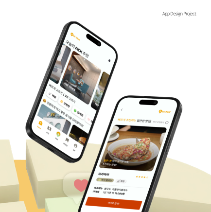
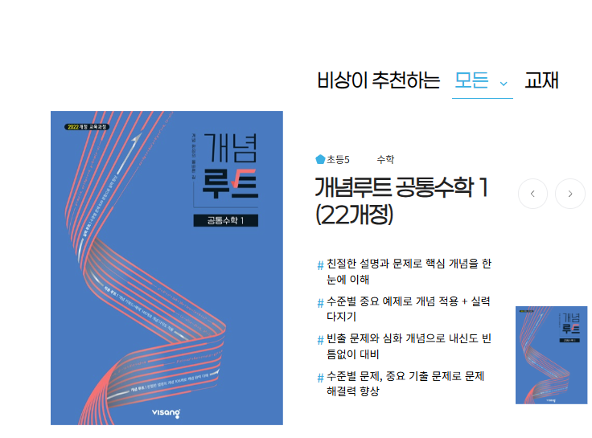
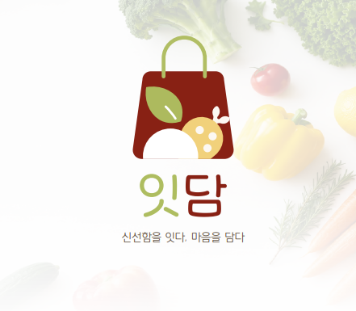
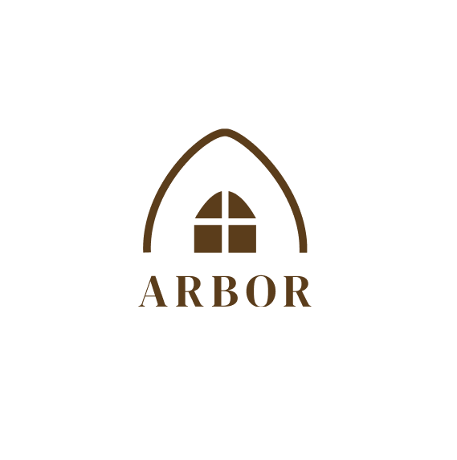
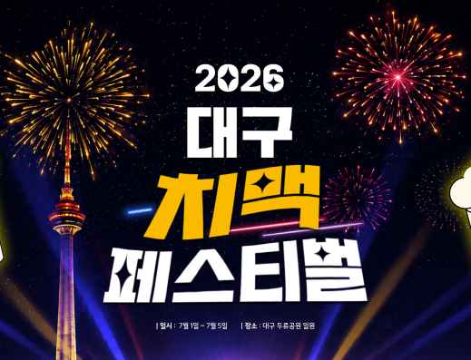
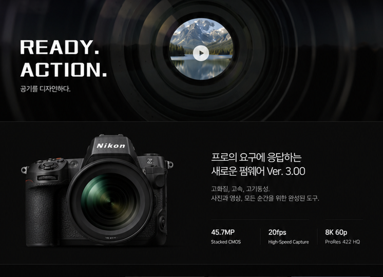
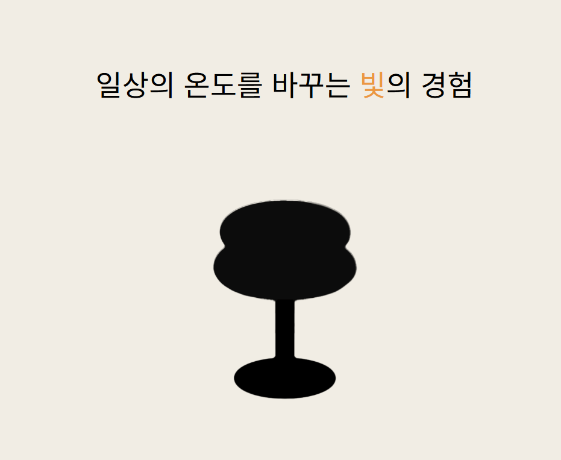
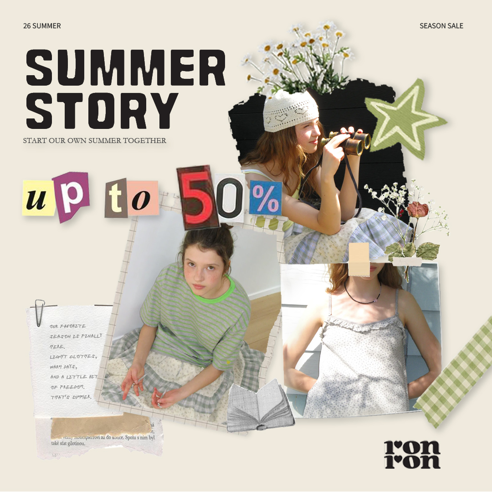
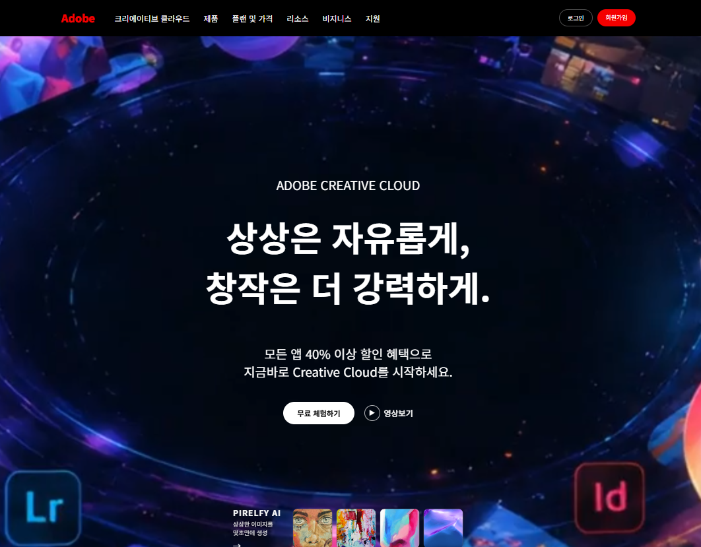

Style Guide
Color, Typography, Component, Spacing을 정리하는 영역입니다.
Hyeon Jeong | PORTFOLIO
UX/UI DESIGN
스크롤 해주세요

PROJECTS

사용자 흐름을 중심으로 설계한 앱 디자인 프로젝트View Process
웹 구조와 반응형을 학습한 클론 코딩 프로젝트View Process
브랜드 무드와 시각 언어를 정리한 디자인 작업View Process
상품과 구매 흐름을 고려한 웹 디자인 프로젝트View Process
축제 정보를 빠르게 탐색하는 이벤트 랜딩 페이지View Process
제품 정보와 구매 설득 흐름을 정리한 상세 페이지View Process
브랜드 경험을 중심으로 구성한 웹사이트 디자인View Process
시각 주목도와 메시지 전달력을 고려한 콘텐츠 디자인View Process
협업 과정과 역할 분담을 중심으로 정리한 팀 프로젝트View ProcessPROJECT DETAIL
사용자 흐름을 중심으로 설계한 앱 디자인 프로젝트입니다.
Color, Typography, Component, Spacing을 정리하는 영역입니다.
완성 화면과 주요 인터페이스를 보여주는 영역입니다.
문제 정의, IA, User Flow, Wireframe, UI 개선 과정을 연결합니다.
PROJECT DETAIL
웹 구조와 반응형을 학습한 클론 코딩 프로젝트입니다.
색상, 타이포그래피, 레이아웃 기준을 정리합니다.
메인 화면과 반응형 화면을 보여줍니다.
구조 분석, 코드 분리, 반응형 구현 과정을 기록합니다.
PROJECT DETAIL
브랜드 무드와 시각 언어를 정리한 디자인 작업입니다.
로고, 컬러, 그래픽 모티프를 정리합니다.
브랜드가 적용된 주요 시각물을 보여줍니다.
컨셉 도출부터 최종 비주얼까지의 과정을 보여줍니다.
PROJECT DETAIL
상품과 구매 흐름을 고려한 웹 디자인 프로젝트입니다.
쇼핑몰 톤앤무드와 UI 컴포넌트를 정리합니다.
메인, 상품, 구매 흐름 화면을 보여줍니다.
정보 구조와 구매 동선 설계 과정을 기록합니다.
PROJECT DETAIL
축제 정보를 빠르게 탐색하는 이벤트 랜딩 페이지입니다.
축제 무드에 맞춘 컬러와 그래픽 시스템을 보여줍니다.
히어로, 라인업, 이벤트, 지도 섹션을 보여줍니다.
정보 우선순위와 랜딩 흐름 설계 과정을 기록합니다.
PROJECT DETAIL
제품 정보와 구매 설득 흐름을 정리한 상세 페이지입니다.
상품 톤, 콘텐츠 구획, 강조 요소를 정리합니다.
상세 페이지 전체 흐름과 주요 구간을 보여줍니다.
고객 설득 흐름과 콘텐츠 배치 과정을 기록합니다.
PROJECT DETAIL
브랜드 경험을 중심으로 구성한 웹사이트 디자인입니다.
브랜드 무드, 색상, 카드 스타일을 정리합니다.
브랜드 사이트의 주요 화면을 보여줍니다.
브랜드 해석과 페이지 구조화 과정을 기록합니다.
PROJECT DETAIL
시각 주목도와 메시지 전달력을 고려한 콘텐츠 디자인입니다.
SNS 콘텐츠의 컬러와 타이포그래피 기준을 정리합니다.
피드, 배너, 썸네일 등 콘텐츠 결과물을 보여줍니다.
콘텐츠 목적과 시각 우선순위 도출 과정을 기록합니다.
PROJECT DETAIL
협업 과정과 역할 분담을 중심으로 정리한 팀 프로젝트입니다.
팀 프로젝트의 공통 디자인 기준을 정리합니다.
팀원이 함께 만든 주요 화면을 보여줍니다.
역할 분담, 회의, 와이어프레임, 디자인 과정을 기록합니다.
ABOUT
CONTACT